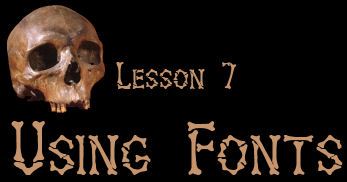

The title says it all. This lesson is about using fonts. The right font can add to the impact of your web page. Unfortunately, it's difficult to guess in advance which fonts your visitors will have. The majority will, of course, have the standard Windows fonts which includes Verdana, Arial, Times New Roman, and Comic Sans MS. You can't really even count on that, howeer, because there are going to be visitors who use other operating systems, such as Linux or Mac OSx. In addition, fancier fonts like the one used in the title above (called Bones, by the way) aren't going to be available to all of your readers. This is just one more way in which web page design is imprecise, more of a guess than a gaurantee.
There are several ways you can use fonts, and some are better than others. These include:
- Use only those fonts that are likely to be installed on most visitors systems. That means you will need to confine yourself to about half a dozen fonts including Arial, Comic Sans, Verdana, Times New Roman, and Courier New. If you define fonts explicitly, you can provide a list of fonts so that if the visitor doesn't have one font, another can be substituted.
- Use the fonts you want to use and make the font available on the web page or provide a link to the website where the font can be downloaded. Again, you can provide a list of font names and so that if the visitor doesn't have one font, another font will be substituted.
- Create the text as a graphic and insert the graphic into your page. This has the advantage that you don't have to ask the reader to install anything but it makes the page load more slowly because the graphic is certain to be larger than the same amount of text.

This page (except for the buttons, bar, and title) uses the first method. Chances are that you are seeing the text on this page as Verdana, because that's how I defined it. There is a small chance that you are seeing something else, but even so, the text should look pretty good overall.
I have also created two other pages:
- Lesson 7b - a page that uses a fancy font but makes the font available to the reader so they can download it and see the page as I wanted them to see it.
- Lesson 7c - a page for which I created a block of text in a fancy font using PaintShop Pro X. I made the image as small as possible, but it still takes qutie a bit longer than the first two pages to load.


Text and graphics Copyright © 2006, Irene Smith. All rights reserved.